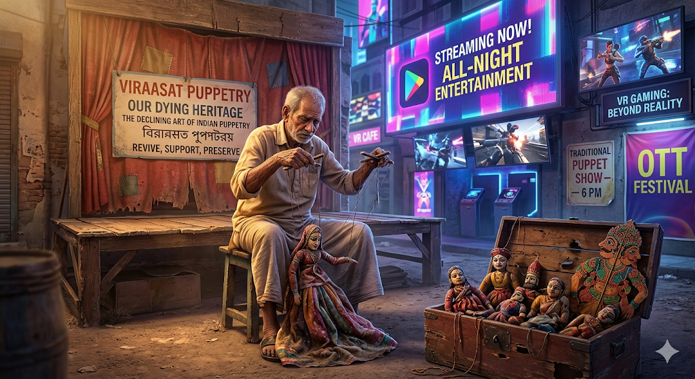

Research Project
The Declining Art of Puppetry
This project explored the cultural importance of traditional puppetry, the reasons behind its decline, and possible ways it can be preserved. It reflects my interest in research, documentation, and using clear communication to highlight meaningful cultural topics.

Overview
Not every important project is code-heavy. This one focused on understanding the cultural role of puppetry, what has caused its decline over time, and how preservation could be supported through awareness, modernization, and digital visibility.
Key Highlights
- Studied the historical and cultural significance of traditional puppetry.
- Documented the challenges that make continuation and audience growth difficult today.
- Proposed preservation ideas involving awareness, modernization, and digital media.
- Strengthened research, presentation, and structured documentation skills.
Project Strengths
- Research
- Analysis
- Documentation
- Presentation
- Communication
What I learned
This project reminded me that strong technical work also depends on observation, empathy, and
the ability to explain why something matters.